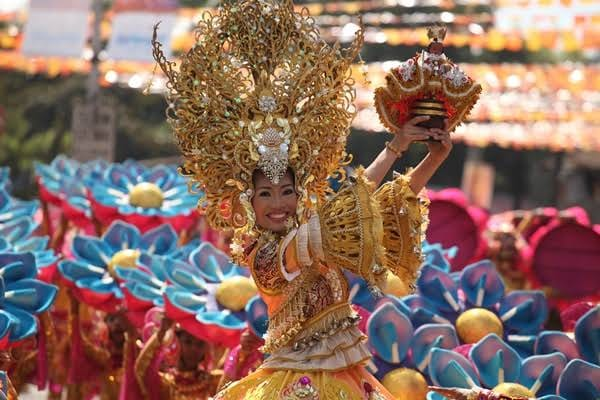
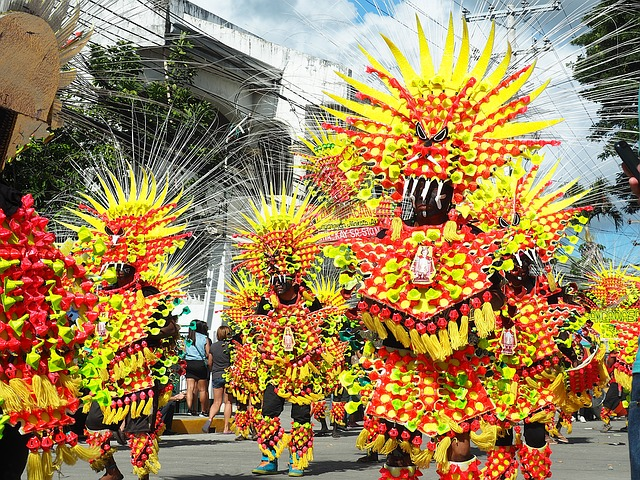
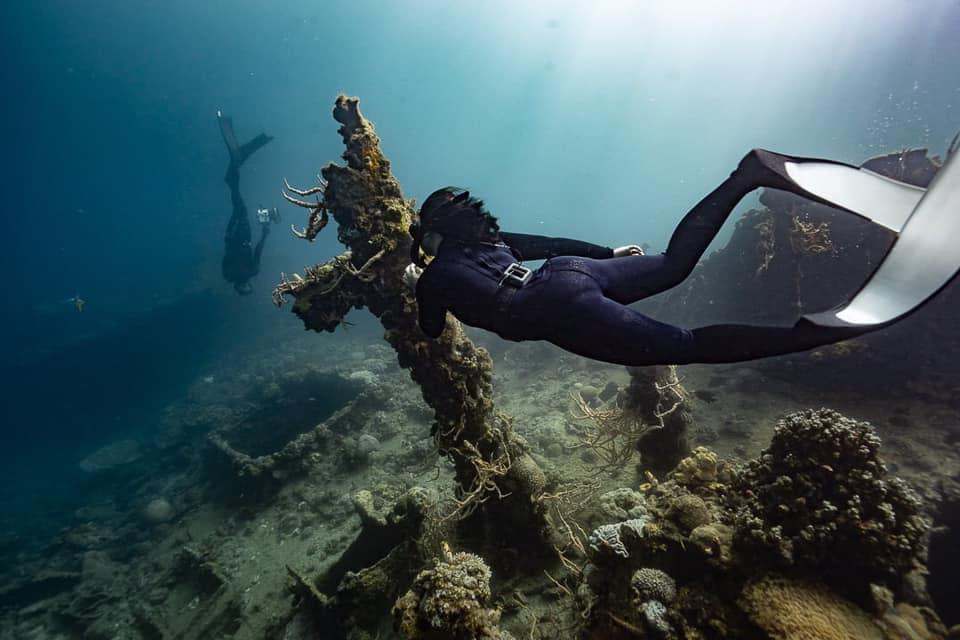

Palawan, officially the Province of Palawan, is an archipelagic province of the Philippines that is located in the region of Mimaropa. It is the largest province in the country in terms of total area of 14,649.73 km².
| Arawedan Festival, Port Barton – January |
- a showcase for the area’s beaches, marine reserves, parks and culture. |
| Kulambo Festival, El Nido – March |
- Street dancing in kulambo (mosquito net) costumes. |
| Puerto Princesa City Foundation Day – 4th March |
- Culture, sports, markets, singing, dancing and food. |
| Pasinggatan Festival, Taytay – April and May |
- Regional street dances and a food festival. |
| Baragatan Festival, Puerto Princesa – June |
- Song, dance, parades and markets. |


| 1. TUBBATAHA REEFS NATURAL PARK |
- Dive in the Tubbataha Reefs Natural Park, named one of the world’s best dive sites by CNN Travel, and explore the dive sites of El Nido, including Dilumacad’s underwater cavern and Bacuit Bay. |
| 2. IWAHIG ECOTOURISM AND WILDLIFE PARK |
- Kayak under the stars in Iwahig Ecotourism and Wildlife Park, and visit Iwahig’s rehabilitation ‘prison without walls.’ |
| 3. PUERTO PRINCESA SUBTERRANEAN RIVER |
- Cruise down the Puerto Princesa Subterranean River. |
| 4. ISLAND HOPPING |
- Go island-hopping and snorkelling in Honda Bay, discovering Starfish Island and others. |
| 5. WRECK-DIVING |
- Go wreck-diving off Coron or neighbouring Busuanga Island. |
